I. はじめてのウェブサイト
1. はじめに
ウェブ開発の世界へようこそ
みなさん、こんにちは！ ウェブサイトを作ってみたいと思ったことはありますか？ 今の社会では、自分の考えや情報を世界に伝えるために、ウェブサイトを作る技術はとても大きな力になります。
特に留学生のみなさんにとって、ウェブサイトは「言葉の壁」をこえるための強い味方です。完全な日本語を話すのが難しくても、ウェブサイトなら写真やデザイン、図を使って、あなたの魅力や才能を視覚的に伝えることができます。
「ウェブ開発はむずかしそう……」と感じるかもしれません。確かに、Facebook（フェイスブック）のような複雑なサイトを、いきなり一人で作ることは難しいです。しかし、安心してください。自分だけのシンプルなウェブサイトなら、少しずつ進むことで、誰でも作ることができます。
このガイドでは、ウェブサイトがどのように動いているのか、そしてどうすれば自分の作品を世界に広めることができるのかを、やさしく解説します。自分で情報を広める力を身につけることは、将来の仕事や自分を表現するために、必ず素晴らしいプラスになるはずです。
準備はいいですか？ まずは、スタートするために必要なものを確認しましょう。
Note
この資料はMDNの「Your first website」をやさしい日本語にしたものです。
2. 準備するもの
スタートラインに立つ
実際にコード（コンピュータへの命令）を書き始める前に、自分のコンピュータで作業ができる準備をすることが大切です。これを「環境構築 / パソコンでサイトを作るための準備」と呼びます。
まず、以下の3つのことがスムーズにできるか確認してください。
- OS（オペレーティングシステム）の操作： WindowsやmacOSなどの基本的な使い方がわかる。
- ファイルシステムの理解： ファイルを保存したり、フォルダを作って整理したりできる。
- ブラウザの利用： インターネットで検索をしたり、サイトを見たりできる。
Note
「2. ファイルシステムの理解」に自信のない人は、補足資料集の「ファイルとフォルダの基本」を見てください
次に、以下の「道具」を用意しましょう。
- コードエディター： プログラムのコードを書くための専用ソフトです。Visual Studio Codeを使います。すでに皆さんのPCにインストールされています。
- ウェブブラウザ： 主にGoogle Chrome を使います。こちらもんストール済みです。
道具がそろったら、次は「どんなサイトを作るか」という計画を立てるステップです。
3. 計画を立てる
サイトの見た目を決める
いきなりコードを書き始めるのは、設計図なしで家を建てるようなものです。まずは「計画」から始めましょう。最初にしっかり計画を立てることで、作業の途中で迷わなくなり、結果として「情報の整理された見やすいサイト」を作ることができます。
計画を立てるときは、以下のポイントを整理してみてください。
- どんな情報を載せるか： 誰に、何を伝えたいですか？（自己紹介、趣味の紹介など）
- どんなフォントや色を使うか： 明るいイメージですか？ それともクールで落ち着いたイメージですか？
見た目のイメージが固まったら、いよいよサイトの「中身（文章）」と「形」を作っていく段階に入ります。
Note
見た目: 外から見た物事のありさま （例 その車は 見た目 は美しいが中身は壊れている）
4. サイトの「3つの要素」
HTML、CSS、JavaScript
ウェブサイトは、主に3つの技術が組み合わさってできています。これを「家づくり」に例えて見てみましょう。
| 技術名 | 役割（家の例え） | 詳しい説明 |
|---|---|---|
| HTML | 構造 | 段落、リスト、画像など、コンテンツの「意味」や「土台」を作ります。 |
| CSS | 見た目（かざり） | 色、サイズ、配置、背景など、サイトを「美しく」整えます。 |
| JavaScript | 動き | ボタンの反応、アニメーション、ゲームなど「便利な機能」を加えます。 |
これらの技術は、どれか一つ欠けてもうまくいきません。たとえば、HTMLだけでは文字が並んでいるだけで読みにくく、CSSがないとデザインがバラバラになります。また、JavaScriptがないと動きのない静かなサイトになってしまいます。
これらを正しく組み合わせることで、ユーザーにとって「読みやすく」「使いやすく」「楽しい」ウェブサイトが完成するのです。
Note
段落：長い文章を内容などから分けた、言葉の集まり
Note
リスト：複数の項目や要素を集めたもの
Note
画像：写真や絵など
5. 世界へ公開する
パブリッシング
自分のパソコンで作ったファイルは、そのままでは自分にしか見ることができません。これをインターネット上にアップロードして、世界中の誰でも見られる状態にすることを「公開（パブリッシング）」と言います。
公開の手順をシンプルにまとめると、以下のようになります。
- コードを書き終える： HTML、CSS、JavaScriptを完成させます。
- ファイルを整理する： 画像やコードのファイルを正しいフォルダにまとめます。
- オンラインにアップロードする： 「サーバー」と呼ばれる、インターネット上の場所へファイルを送ります。
Note
授業では、このステップは実施しません。興味のある方は、ここをクリックしてMDNの関連サイトを参照してください。
6. まとめと次のステップ
ここまで、ウェブサイト制作の全体像を見てきました。ウェブ開発の学習は、一度で完璧にする必要はありません。小さな「できた！」を積み重ねていくプロセスそのものが大切です。
II. デザインと計画のガイドブック
ウェブサイトを作るとき、いきなりパソコンでコード（プログラムの言葉）を書き始めるのは、おすすめしません。まずは「計画（プランニング）」をしましょう。
このガイドブックでは、ウェブ開発の専門家が、留学生のみなさんにも分かりやすい「やさしい日本語」で、サイト作りの準備について教えます。
1. はじめに：なぜ「計画」が大切なのか
家を建てるときに「設計図」が必要なように、ウェブサイトにも計画が必要です。コードを書く前に計画を立てるのには、大きな理由があります。
- 「作り直し」をふせぐ： 何も決めずに作ると、あとで「やっぱり違う！」となって、時間をむだにしてしまいます。
- 最後まで完成できる： 最初にやることを決めると、迷わずに最後まで作ることができます。
計画を立てることは、プロのエンジニアも一番大切にしているステップです。
2. ウェブサイトの目的を整理する
最初のプロジェクトでは、内容を「シンプル」にすることが成功のヒミツです。大きすぎる目標を立てると、途中で嫌になって諦めてしまうからです。
まずは、次の3つの質問に答えてみましょう。
- このサイトは何についてのサイトですか？（例：好きな犬について、旅行したニューヨークについて、パックマン（Pac-Man）についてなど）
- どんな情報を紹介しますか？（ウェブサイトの名前を決めましょう。そして、1つの「見出し（タイトル）」、1つの「画像」、2〜3個の「段落（短い文章）」を考えてください）
- どんな見た目のサイトにしますか？（背景は何色がいいですか？ 文字の形は「まじめ」ですか？ それとも「かわいい」ですか？」）
専門家の知恵：デザインガイド
大きなプロジェクトでは、「デザインガイド（デザインシステム）」というルールブックを作ります。例えば、Firefoxには「Firefox Acorn Design System」という有名なガイドがあります。これを見ると、プロがどうやって「色」や「文字」のルールを統一して、きれいに見せているかが分かります。
目的が決まったら、次はそれを絵に描いてみましょう。
Note
「プロジェクト」は一つのウェブサイトやアプリケーションを作るための計画、あるいは、その計画に関わる人々のグループのことです。そうした計画のためのデジタル素材やソースコードなどをまとめたものを指すこともあります。
3. デザインのスケッチ：見た目のイメージを作る
ペンと紙を使って、サイトの形を自由に描いてみましょう。これを「スケッチ」と言います。
プロも、最初はパソコンを使わず、紙に書くことから始めます。ここで大切なのは、「完璧を目指さないこと」 です。有名な画家のゴッホ（Van Gogh）のように上手に描く必要はありません。どこにタイトルがあり、どこに画像があるか、自分が分かれば十分です。
また、ウェブ制作の現場には、2つの役割があります。
| デザイナーの種類 | どんな仕事をする人？ |
|---|---|
| グラフィックデザイナー | ウェブサイトの 見た目を きれいに デザインする 人 |
| UXデザイナー | ユーザーが ボタンを 押しやすくしたり、情報を 見つけやすくしたりする 人 |
今は、あなたがこの両方の仕事をします。自分のアイデアを自由に紙に書いてみてください。
4. テーマカラー（色の名前とコード）を決める
サイトの印象を決める「色」を選びましょう。
- 色を選ぶ： カラーピッカーなどのツールで、背景に使いたい色を探します。
- コードをメモする： 色を選ぶと、#660066 のような「6つの英数字」が表示されます。これを 16進数コード（hex code／ヘックスコード） と呼びます。
Note
16進数コード（hex code）とは コンピュータが「この色です！」と正しく理解するための専用の番号です。あとでコードを書くときに使うので、必ずメモしておきましょう。
5. 画像の準備：ルールを守って探す方法
インターネットにある画像には「持ち主」があります。これを 著作権（コピーライト） と言います。勝手に使うと法律のトラブルになることがあるので、注意してください。
「自由に使ってもいい画像」をGoogleで探す方法は、次の通りです。
- Google画像検索を使う： 好きな言葉で検索します。
- ツールを使う： 検索結果の画面にある「ツール」ボタンをクリックします。
- ライセンスを選ぶ： その下に表示される「使用権」をクリックし、「クリエイティブ・コモンズ ライセンス」を選びます。
- 保存する： 好きな画像を見つけたら、右クリック（Macは Ctrl + クリック）をして、「名前を付けて画像を保存」を選びます。
6. フォント（文字の形）の選択
フォントには2つのタイプがあります。
- ウェブセーフフォント： どのパソコンにも最初から入っている安心なフォントです（例：Arial, Times New Roman）。
- Google Fonts： デザイン性が高いフォントを無料で借りられるサービスです。
ここでは、Google Fontsを使う手順を説明します。
- Google Fontsへ行く： サイトのイメージに合うフォントを探します。
- コードを取得する： 好きなフォントを選び、「Get font」ボタンを押してから、「Get embed code（埋め込みコードを取得）」をクリックします。
- 2つのコードを保存する： 画面に表示された 2つのコードブロック（2つのまとまったコード） を両方ともコピーして、メモ帳などに保存してください。フォントを動かすには、この2つが両方必要です。
⚠️ 注意：商業利用について フォントにもライセンスがあります。勉強で使うのは大丈夫ですが、将来、仕事でサイトを作るときは、必ず「商売（ビジネス）で使ってもいいか」を確認しましょう。
7. まとめと次のステップ
お疲れさまでした！これで「サイトの設計図」と「素材」がすべて揃いました。
- 計画： どんな内容にするか決めた。
- スケッチ： レイアウトを紙に書いた。
- 素材： 色のコード、画像、フォントの準備ができた。
しっかりとした「土台」ができたので、次のステップである「HTMLやCSSを書く作業」を、自信を持って進めることができます。
準備はバッチリです。さあ、次は実際にコンピュータで、あなただけのウェブサイトを形にしていきましょう！
III. ウェブサイトの形を作ろう
ウェブサイトを作るための 最初の一歩へ ようこそ！ プログラミングや ウェブ制作を 始めるとき、 最初に 覚えるのが「HTML」です。
HTMLは ウェブサイトの「骨組み」、つまり 構造を 作るための 言葉です。この 基本を 正しく 知ることは、ウェブサイトを 作る プロ（仕事を する 人）に なるために、とても 大切なことです。
Note
「骨組み」は、もとは「からだの骨の組み立て」のことですが、そこからの「例え」で、建造物・機械などの基礎的な構造の部分のことも指します。
1. HTMLとは何？：ウェブの基本を理解する
HTML（HyperText Markup Language） は、テキスト（文字）に「印」を つけて、ウェブサイトの 構造を 作るための「マークアップ言語」です。
HTMLの 役割を わかりやすく 例えると、「荷物に ラベルを 貼る 作業」 に 似ています。ただの テキストに「これは 見出しです」「これは 段落です」という ラベルを 貼ることで、ブラウザ（Google Chromeなど）が その意味を 理解できるようになります。
- 要素 / Elementとは： テキストを「タグ」と 呼ばれる 記号で 囲んだ セットのことです。
- ブラウザへの 伝言： タグを 使うことで、ブラウザに「ここから ここまでが 段落だ」と 伝えることができます。
HTMLを 使う 理由： もし HTMLが なければ、すべての 文字が 一行に つながってしまい、とても 読みにくくなります。また、目が 見えにくい 人が 使う「音声読み上げソフト」も、どこが 大事な 場所なのか わからなくなってしまいます。HTMLで 正しく 構造を 作ることで、誰にでも 意味が 伝わる ページに なります。
2. HTMLファイルの基本の形
ウェブページを 正しく 動かすためには、決まった「型」が 必要です。
主要な 構成要素
MDNの ルールに 基づいた、基本的な パーツは 以下の 通りです。
<!doctype html>：ページを 正しく 表示させるために、ファイルの いちばん 上に 書かなければならない ルールです。<html>：ページの すべての 内容を 包む「 いちばん 外側の 箱」です。<head>：画面には 見えないけれど、ブラウザや 検索エンジンのための 大切な 情報（情報/メタデータ）を 入れる 場所です。<title>：ブラウザの「タブ」に 出る 名前や、ブックマーク（お気に入り）したときの 名前になります。<body>：実際に ユーザーが 見る コンテンツ（文章や 画像など）を すべて 入れる 場所です。
メタデータ（大切な 設定）の 価値
<head>の 中には、以下の ような 設定を 書きます。
- 文字コード（UTF-8）： これを 書かないと、日本語などが 変な 記号に なる「文字化け」が 起きることが あります。
- ビューポート（viewport）： スマートフォンの 画面サイズに 合わせて、きれいに 表示するために 必要です。
タグの 構造：入れ子
HTMLは「タグの 中に 別の タグが 入る」という「入れ子」の 形に なります。
<html> <!--一番外側の箱-->
<head> <!--ブラウザのための情報の箱-->
<title> ページの名前 </title>
</head>
<body> <!--私たちが見る中身の箱-->
<h1> タイトル </h1>
<p> 文章の 段落（だんらく） </p>
</body>
</html>
Note
「入れ子」: 大きな箱の中に小さな箱が入っている、というように、あるものの中に、よく似たあるものが入っている様子を指す日本語です。
3. テキストに意味をつける：見出し、段落、リスト
文章を 分かりやすくするために、適切な タグを 使います。
- 見出し（
<h1>〜<h6>）： 本の「タイトル」や「章」の ように、情報の 優先順位を 示します。<h1>が もっとも 重要な タイトルで、数字が 大きくなるほど 小さな 見出しに なります。 - 段落（
<p>）： ふつうの 文章を まとめるための タグです。 - リスト（箇条書き）：
<ul>（順序なし リスト）： 買い物リストの ように、順番が 関係ないときに 使います。<ol>（順序あり リスト）： 料理の 手順の ように、順番が 大切なときに 使います。- ※どちらも、中身の 項目は
<li>タグで 囲みます。
HTMLコメント（<!-- -->）の メリット： コードの 中に <!-- メモ --> と 書くと、ブラウザには 表示されません。これは「自分や 仲間」のための メモです。あとで 見直したときに、何をしたのか すぐに 分かるように なります。
4. 画像を 表示する：<img>要素の使い方
画像を 表示するには <img> 要素を 使います。
- src属性： 画像が ある 場所（パス）を 指定します。
- alt属性： 画像の 説明を 文字で 書きます。
- 重要性： 目が 不自由な 人が 使う ソフトが この文字を 読み上げます。また、画像が エラーで 出ないときにも 代わりに 表示されます。
- 良い 例： alt=“Firefoxのロゴ：地球を包む燃えるキツネ” の ように、何が 書いてあるか 具体的に 書くのが 正しい 使い方です。
空要素 / void element： <img> は 文章を 囲まないので、終わりの タグ（</img>）が いりません。これを「空要素」と 呼びます。
ファイル管理のアドバイス： 画像は images/ という 名前の フォルダを 作って、その中に 入れましょう。HTMLからは src="images/写真の名前.jpg" の ように 指定します。こうすることで、たくさんの ファイルを きれいに 整りできます。
5. リンクを作ってページをつなぐ：<a>要素
ウェブ（蜘蛛の巣：くものす）の 名前の とおり、ページどうしを つなぐのが「リンク」です。
リンクの作り方
- リンクに したい テキストを 選びます。
- その テキストを
<a>タグで 囲みます。 - href 属性に、行きたい 先の アドレス（URL）を 書きます。
<a href="https://www.mozilla.org/">Mozillaのウェブサイト</a>
大切な 注意点： アドレスを 書くときは、必ず https:// などの 通信の ルール（プロトコル） から 書き始めてください。これがないと、リンクが 正しく 動きません。また、リンクにする 言葉は「ここを クリック」ではなく「Mozillaの ウェブサイト」の ように、どこに 行くのか わかる 言葉を 選びましょう。
6. まとめ：自分のウェブサイトを作ってみよう
「構造（HTML）」「テキスト」「画像」「リンク」が 組み合わさることで、一つの ページが 完成します。
初心者のための チェックリスト
公開する 前に、これを 確認しましょう：
- タグの 閉じ忘れは ありませんか？（
<img>以外、終わりのタグが 必要です） - ファイルの名前は 正しいですか？（大文字と 小文字の 間違いは ありませんか？ Index.html と index.html は 違います）
- 画像の パス（フォルダの場所）は 正しいですか？（images/ フォルダの 中に 画像が ありますか？）
- リンクの https:// を 忘れていませんか？
- alt属性は わかりやすく 書きましたか？
次のステップ： HTMLで 形が できたら、次は 「CSS」 を 学んで 色や デザインを きれいに しましょう。さらに 「JavaScript」 を 使えば、動きのある ページに なります。
IV. ウェブサイトをデザインするCSS
1. はじめに：CSSとは何でしょうか？
ウェブサイトを作るとき、文字や画像などの「内容」を準備するだけでは、まだデザインが完成していません。そこで使われるのが CSS（シーエスエス） です。
CSSは、ウェブサイトの「見た目」を整えるための専用の言葉です。HTMLで作成した文章に色をつけたり、大きさを変えたり、好きな場所に並べたりすることができます。
HTML（内容）とCSS（スタイル）の違い
ウェブサイトは、主に2つの役割が組み合わさってできています。
- HTML（内容）： 「ここにタイトルがある」「ここに文章がある」という、サイトの骨組み（土台）を作ります。
- CSS（スタイル）： 「タイトルを青色にする」「文章の横幅を600ピクセルにする」といった、見た目を美しく飾ります。
CSSを使ってデザインを整えることで、ウェブサイトはもっと読みやすくなり、訪れた人に「使いやすい」と感じてもらえるようになります。
CSSの定義
- スタイルシート言語： プログラミング言語ではなく、見た目を指定するための特別な言葉です。
- 要素の装飾： HTMLで書かれた特定の場所を選んで、見た目を変えることができます。
次のセクションでは、CSSを実際にどうやって書くのか、その基本ルールを学びましょう。
2. CSSの書き方（構文）を覚えましょう
CSSを書くときには、決まった形（構文）があります。「どこの」「何を」「どう変えるか」という順番で指示を書きます。
CSSを構成するパーツ
CSSは、以下のパーツを組み合わせて作ります。
- セレクター（選びたい場所）： デザインを変えたいHTMLの要素を指定します。
- プロパティ（変えたい項目）： 色、大きさ、場所など。
- 値（設定する内容）： 具体的にどんな色にするか、どれくらいの大きさにするかを決めます。
宣言とルールセット
CSSでは、プロパティと値を組み合わせたペアを 「宣言」 と呼びます。また、セレクターと { } で囲まれた複数の宣言をまとめたものを「ルールセット（Ruleset）」と呼びます。
書き方のルールとコード例
プロパティの後には必ずコロン : を、値の後には必ずセミコロン ; を書きます。
p {
color: red; /* 宣言1：文字の色（プロパティ）を赤（値）にします */
font-size: 16px; /* 宣言2：文字の大きさ（プロパティ）を16ピクセル（値）にします */
}
書き方を理解したら、次はCSSをHTMLに読み込ませる方法を確認しましょう。
3. HTMLにCSSを読み込ませる方法
CSSを書くだけでは、ウェブサイトにデザインは反映されません。HTMLとCSSを正しくつなぐ手順が必要です。
正確な設定が大切な理由
ウェブサイトを作るときは、ファイルを整りするために styles という名前のフォルダを作り、その中に style.css を作成します。
HTMLファイルの <head> （ヘッド：サイトの設定を書く場所）内に、以下の1行を書きます。
<link href="styles/style.css" rel="stylesheet" />
【トラブルを避けるポイント】
フォルダ名やファイル名が1文字でも間違っていると、デザインは全く表示されません。
styles/style.css という「道すじ（パス）」が実際のフォルダ構成と合っているか慎重に確認しましょう。
4. 文字のデザインをきれいにする（フォントとテキスト）
文字の見た目は、サイトを訪れる人の「読みやすさ」に大きな影響があります。適切なフォント選びは、サイトを信頼できる印象にするための戦略です。
Google Fonts の利用
標準のフォント以外を使いたいとき、Google Fonts のサービスを使います。HTML の <head> に 自分のstyle.cssより前 に読み込ませます。
<!-- Google Fontsの読み込み例（自分のCSSより前に書きます） -->
<link href="https://fonts.googleapis.com/css?family=Open+Sans" rel="stylesheet" />
<link href="styles/style.css" rel="stylesheet" />
読みやすさを高めるプロパティ
- font-family： フォントの種類
- font-size： 文字の大きさ
- text-align： 文を中央に寄せる
- line-height： 行間
- letter-spacing： 文字の間隔
5. すべては「箱（ボックス）」でできている
CSS の世界では、すべての要素（見出し・文章・画像など）は「箱」の中にあると考えます。これを ボックスモデル と呼びます。
| 要素 | やさしい説明 |
|---|---|
| Content | 文字や画像が入る中心部 |
| Padding | 中身と枠線の内側の余白 |
| Border | 枠線そのもの |
| Margin | 枠線の外側の余白 |
6. ページ全体のレイアウトを整える（色と配置）
背景に色をつけ、body の幅を600pxにし、中央寄せする典型的な設定です。
html {
background-color: #00539F; /* ページ全体の背景を青にします */
}
body {
width: 600px; /* 全体の幅を600ピクセルに固定します */
margin: 0 auto; /* 上下は0、左右は「自動（auto）」で分けて中央に寄せます */
background-color: #FF9500; /* bodyの背景を赤みのあるオレンジにします */
padding: 0 20px 20px 20px; /* 内側に余白を作ります */
border: 5px solid black; /* 黒い枠線で囲みます */
}
margin: 0 auto; の仕組み：
ブラウザが左右の空きを半分ずつ割り当て、body が中央に配置されます。
タイトルに影をつける
h1 {
text-shadow: 3px 3px 1px black; /* 横に3px、縦に3px、ぼかし1px、黒い影 */
}
画像を中央に置く
img {
display: block; /* 画像を「ボックス」として扱うように変えます */
margin: 0 auto; /* これで中央に寄るようになります */
}
7. おわりに：素敵なウェブサイトを作るために
CSS の基礎は、将来のアニメーションや高度レイアウトの土台になります。
- 値を変えて効果を確認
- 他サイトを箱として観察
- 1項目ずつ保存しながら確認
楽しみながら、美しいサイトを完成させてください！
V. ウェブサイトを動かすJavaScript
ウェブサイトを見たときに、ボタンを押して画面が変わったり、画像が動いたりすることはありませんか？
それは「JavaScript」という言葉が働いているからです。
このガイドでは、プログラミングが初めての人や、日本語を勉強中の留学生にも分かりやすく、JavaScriptの基本を説明します。
1. はじめに：JavaScriptとは何か
ウェブサイトを作るとき、HTMLは「骨組み」を、CSSは「見た目」を作ります。そこに「動き」を加えるのがJavaScriptの役割です。
JavaScriptを使うと、ユーザーの操作に合わせてサイトの表示を変えることができます。
ただ情報を読むだけのページから、ユーザーといっしょに動く「体験」へと変えることができる、とても大切な技術です。
JavaScriptでできること
JavaScriptを使って、以下のような動きを作ることができます：
- チェックする： フォームに入力されたデータが正しいか確認します。
- 動かす： ボタンをクリックしたときに、何かを実行します。
- 計算する： ゲームの点数や、数字の計算をおこないます。
- デザインを変える： スタイル（色や大きさ）を自由に変えます。
- アニメーション： 画像や文字をスムーズに動かします。
2. プログラミングの「基本の道具箱」
プログラムを作るとは、いくつかの道具を組み合わせて「命令」をつくることです。JavaScriptを動かす4つの大切な概念があります。
- 変数 (Variables)： データを一時的に入れておく「入れ物」。
- 関数 (Functions)： いくつかの命令をまとめた便利なセット。
- 条件分岐 (Conditionals)： 「もし〜ならA、そうでなければB」。
- イベント (Events)： 「クリックされた」などの動作のきっかけ。
3. 実践：ウェブサイトにJavaScriptを入れる
HTML、CSS、JavaScript の3つが連携してページが動きます。
設定の手順
- scripts フォルダを作り、その中に main.js を作成します。
- HTMLファイルの
<head>の終わる直前に次を書きます：
<script src="scripts/main.js"></script>
- CSSの
<link>と同じ仕組みで、JavaScript を読み込みます。
要素を選んで動かす
let myHeading = document.querySelector('h1');
myHeading.textContent = 'Hello world!';
- 1行目：
<h1>を選び、myHeading に入れます。 - 2行目： textContent を “Hello world!” に変えます。
ヒント： // で書いた行はコメントとして無視されます。
4. 応用：画像チェンジャーと条件分岐
クリックで画像が入れ替わる仕組みです。
手順
- 画像を JavaScript で選ぶ
- クリックされるのを待つ
- 今の src を確認
- if 文で切り替える
実践コード
let myImage = document.querySelector('img');
myImage.onclick = function() {
let mySrc = myImage.getAttribute('src');
if (mySrc === 'images/images/photo1.jpg') {
myImage.setAttribute('src', 'images/photo2.jpg');
} else {
myImage.setAttribute('src', 'images/photo1.jpg');
}
}
- myImage.onclick： クリック時のイベント
- getAttribute： 現在の src を調べる
- setAttribute： src を書き換える
- if…else： 条件で処理を切り替え
6. まとめと次のステップ
お疲れさまでした！これでJavaScriptの基礎を学びました。
- HTML/CSS： ページの土台と見た目
- JavaScript： 動きを加える技術
JavaScript は ゆっくり学べば確実に身につきます。
MDNの教材（日本語 / 英語）もとても良い参考になります。
少しずつ練習して、ぜひあなたのオリジナルの動くウェブサイトを作ってください！
補足資料集
「初めてのウェブサイト」を学ぶ上で、補足・参考になる資料をまとめました。
ウェブ開発のためのファイルとフォルダの基本ガイド
ウェブサイトを作るとき、たくさんのファイルを使います。このガイドでは、プロのエンジニアが最初に覚える「ファイルの整理・整頓」のルールを、やさしく説明します。
1. はじめに：なぜファイルの整理が大切なのか
ウェブサイトは、文字のデータ、プログラム、画像など、多くのファイルで構成されています。これらのファイルは、お互いに呼び出し合って動いています。
もしファイルがバラバラな場所にあると、ウェブサイトは正しく動きません。最初にしっかり整理するルールを決めることが、ウェブサイト作りを成功させる一番の近道です。
次は、自分のパソコンのどこにファイルを作るべきか説明します。
2. ウェブサイトの場所を決めよう
ウェブサイトのファイルは、一つのフォルダにまとめて入れます。このフォルダの中身は、インターネット上のコンピュータ（サーバー）に公開するときと「同じ形」にする必要があります。これを「ミラー（鏡）」と呼びます。自分のパソコンで動くものは、サーバーでも同じように動かなければいけないからです。
おすすめのフォルダ階層
MDN（ウェブ開発の標準的な資料）では、次のような作り方をすすめています。
(1). まず、すべてのプロジェクトを保存する web-projects というフォルダを作ります。
今回は、PC > ローカルディスク(C:) > ユーザー > student1 > source の下につくりましょう。
-
ステータスバーの検索窓に「エクスプローラー」と入力します。
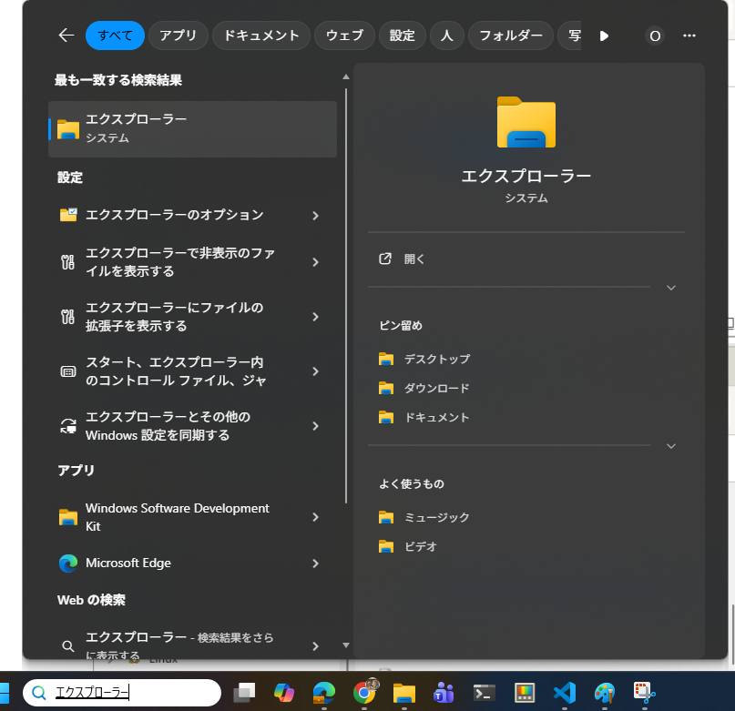
-
左の「PC」の下の「ローカルディスク(C:)」をクリックします。
-
右の「ユーザー」をダブル クリックして、開きます。
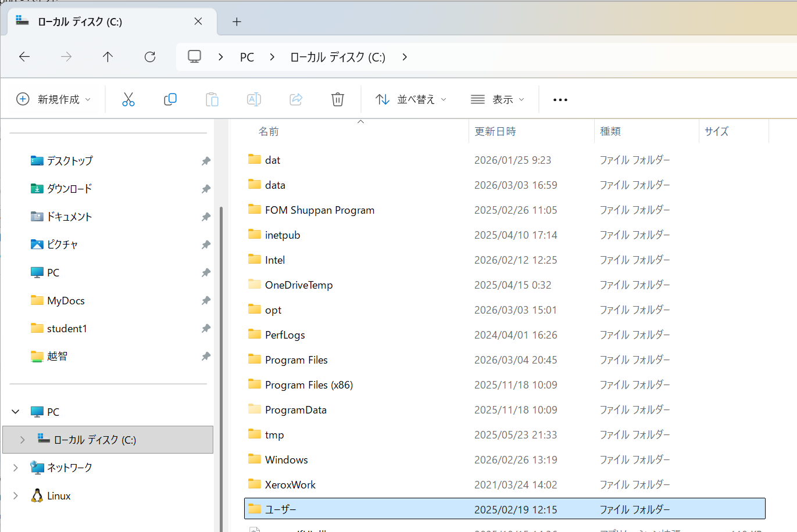
-
「student1」をダブル クリックして、開きます。
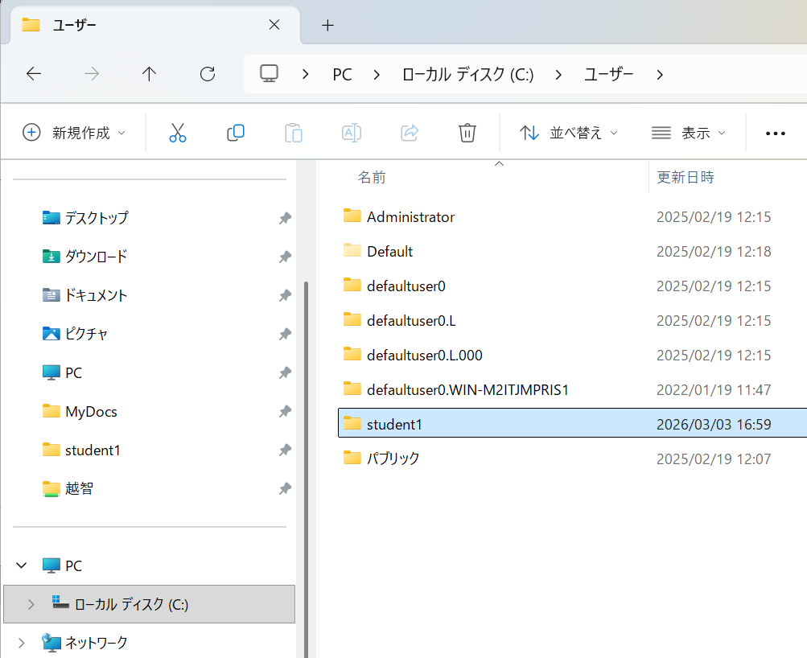
-
「source」をダブル クリックして開きます。
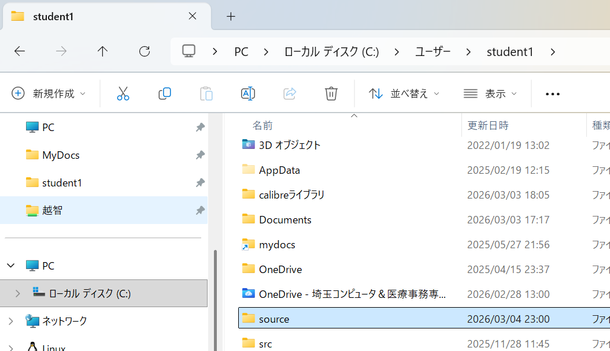
-
右クリックして、「新規作成」 → 「フォルダー」 をクリックします。
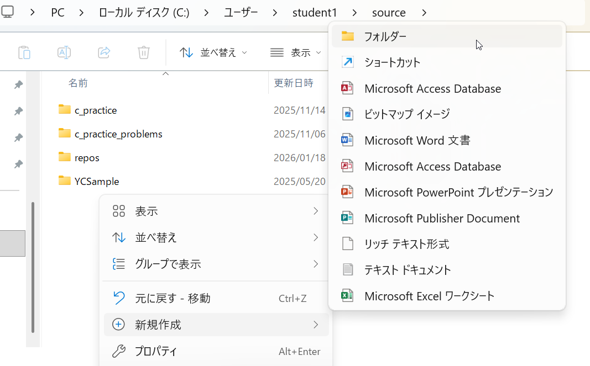
-
「新しいフォルダー」を「web-projects」に書き換えます。
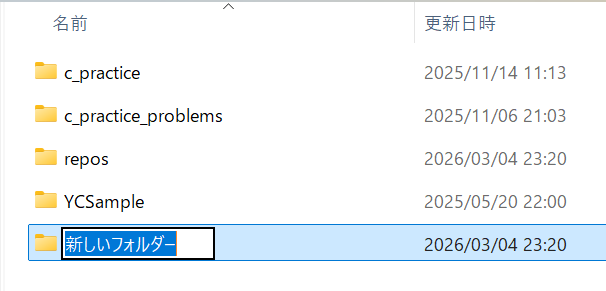
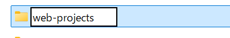
(2). すぐに見つけられるように、クイックアクセスにピン留めしましょう。
-
「web-projects」を一度クリックしてから、右クリックします。
-
「クイック アクセスにピン留めする」をクリックします。
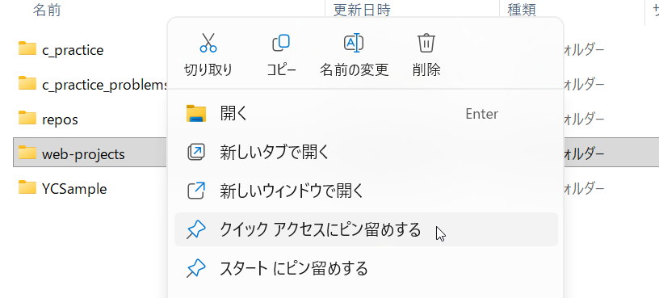
-
右のクイック アクセスに「web-projects」が表示されるのを確認します。
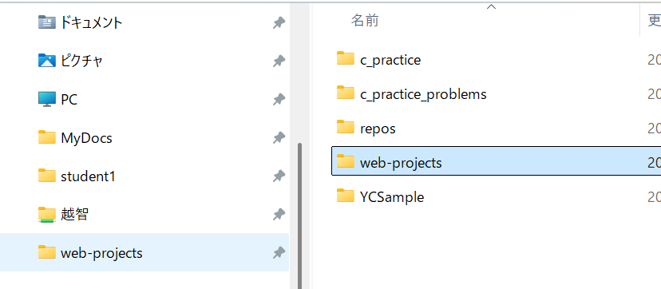
(3). 「web-projects」の中に個別のサイト用のフォルダを作ります。
- 5.6.と同じ手順で、「test-site」というフォルダを作ります。これが今回の個別のサイト用のフォルダになります。
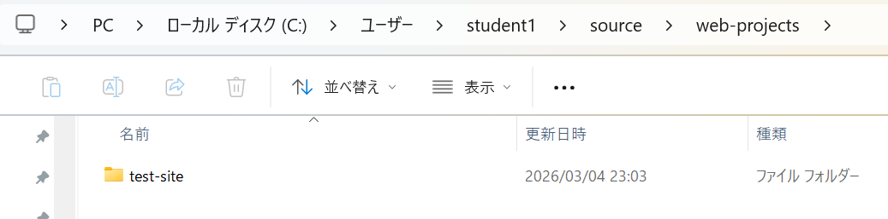
場所は、デスクトップやホームフォルダなど、自分ですぐに見つけられる場所にしてください。場所が決まっていると、作業のミスが減り、開発のスピードが速くなります。
次は、ファイルの名前の付け方を説明します。
3. ファイル名とフォルダ名の絶対ルール
名前を付けるときは、世界中のエンジニアが守っている「3つのルール」があります。
- すべて小文字にする
多くのサーバー（Linuxなど）は、大文字と小文字を厳しく区別します。MyImage.jpg と myimage.jpg は別のファイルだと判断されるため、大文字を使うとエラーの原因になります。 - 空白（スペース）を入れない
コマンドライン（文字で命令するツール）を使うとき、スペースがあるとコンピュータは「2つの別のファイル」だと勘違いしてしまいます。 - 言葉を分けるときはハイフン「-」を使う
アンダースコア「_」も使えますが、ハイフンの方がおすすめです。Googleなどの検索エンジンが、ハイフンを「単語の区切り」として正しく認識してくれるからです。
やっていいこと（Do）・やってはいけないこと（Don’t）
| やっていいこと (Do) | やってはいけないこと (Don’t) | 理由 |
|---|---|---|
| test-site | Test Site | 大文字とスペースはエラーの原因になります。 |
| my-image.jpg | my image.jpg | スペースがあるとURLが正しく表示されません。 |
| my-file.html | my_file.html | ハイフンの方が検索エンジンに好まれます。 |
次は、フォルダの中に何を入れるか説明します。
4. 標準的なフォルダの形
ウェブ開発では、誰が見ても中身がわかるように、次のような決まった形でフォルダを作ります。
- index.html：ウェブサイトの最初のページです。
- images フォルダ：使う画像やイラストをすべて入れます。
- styles フォルダ：サイトのデザイン（色や形）を決めるCSSファイルを入れます。
- scripts フォルダ：サイトに動きをつけるJavaScriptファイルを入れます。
この「標準的な形」を使うと、他の開発者と一緒に働くときに「どこに何があるか」がすぐに伝わります。
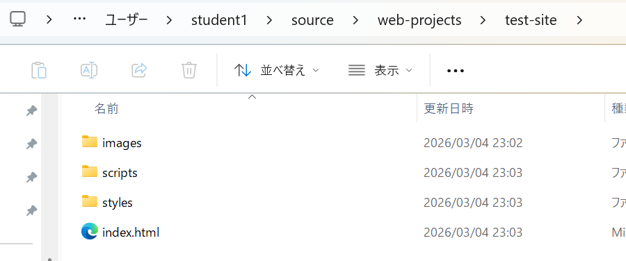
次は、Windowsを使っている人が最初に行うべき設定について説明します。
5. Windowsの設定：拡張子を表示する
Windowsでは、ファイルの種類を表す「.html」や「.jpg」などの拡張子が、既定の設定では隠れています。
しかし、開発では拡張子が重要です。.html ファイルなのか、設定用の .env ファイル（ドットファイル）なのかを正しく判断するために、必ず表示させてください。
拡張子を表示する手順
- フォルダ（エクスプローラー）を開きます。
- 上にある [表示] タブ、または […] メニューから [オプション] を選びます。
- [表示] タブをクリックします。
- 詳細設定の中にある [登録されている拡張子は表示しない] のチェックを外します。
- [OK] をクリックします。
最後に、ファイル同士をつなぐ「ファイルパス」について説明します。
6. ファイルパス：ファイル同士をつなぐ道
「ファイルパス」は、あるファイルから別のファイルを探しにいくための「道」のことです。
書き方のパターン
- 同じ場所にあるとき index.html から同じフォルダのファイルを見る場合。 例：filename.jpg
- 下のフォルダにあるとき index.html から images フォルダの中のファイルを見る場合。 例：images/filename.jpg
- 一つ上のフォルダにあるとき styles フォルダの中のCSSから、外にある images フォルダの中のファイルを見る場合。 例：../images/filename.jpg（.. は「一つ上の階層へ行く」という意味です）
大切な注意点
Windowsではフォルダの区切りに「\（バックスラッシュ）」を使いますが、ウェブ開発では**必ず「/（スラッシュ）」**を使ってください。\ を使うと、自分のパソコンでは動いても、インターネットに公開した瞬間にウェブサイトが壊れてしまいます。
まとめ
- 整理整頓：web-projects フォルダを作り、中身をミラー構造で整理しましょう。
- 名前のルール：小文字、スペースなし、ハイフンを使いましょう。
- パスの指定：ウェブでは必ず「/（スラッシュ）」を使いましょう。
ルールを守ってフォルダを作れば、あとの作業がとても楽になります。一歩ずつ、楽しくウェブサイトを作っていきましょう。応援しています！
Visual Studio Code の準備
Live Server拡張機能のインストール
- 拡張機能アイコンをクリックします
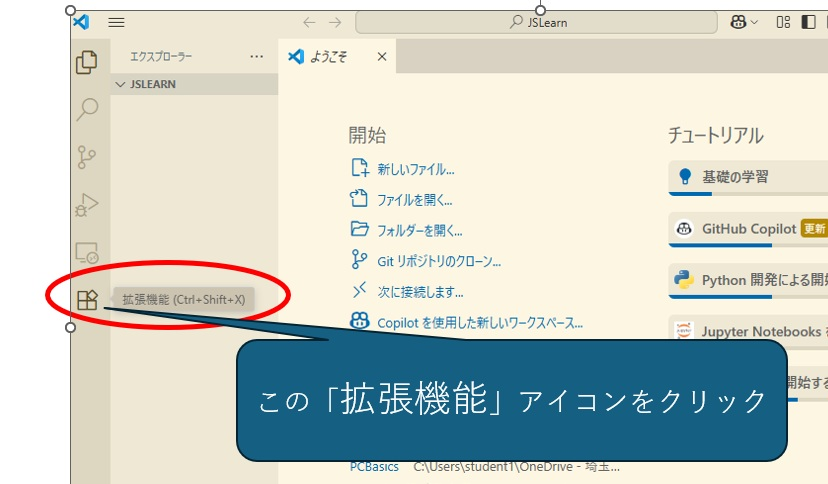
- 検索ウィンドウに“Live Server“と入力します
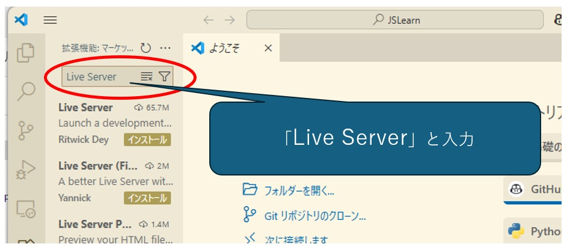
- “インストール“をクリックします
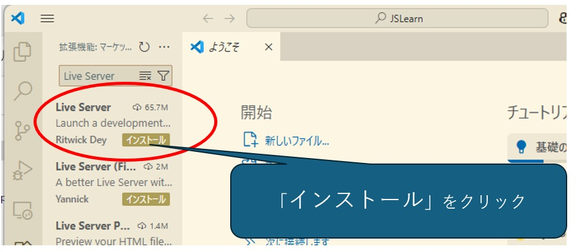
- インストールされたことを確認します
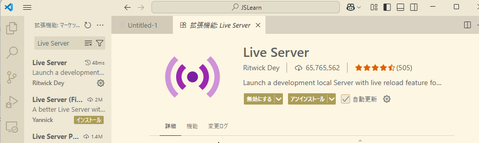
言語設定
- 左下隅の歯車アイコンをクリック
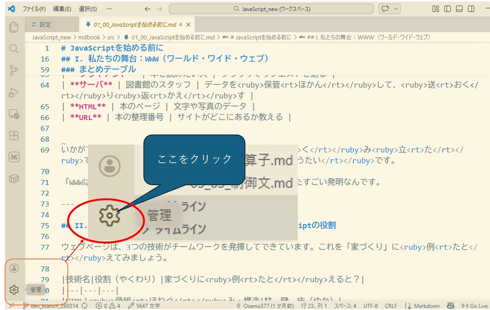
- 「設定」をクリック
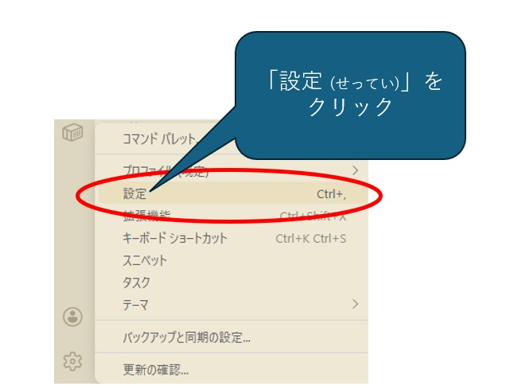
- 検索窓に「emmet variables」と入力
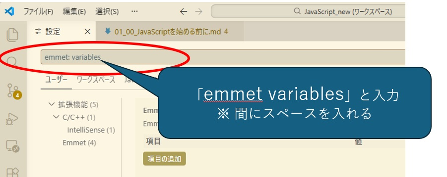
- 項目「lang」に「ja」を指定して「OK」をクリック
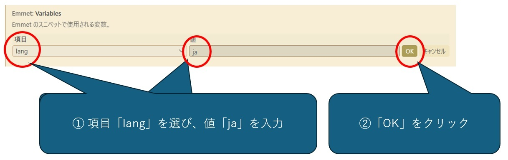
キーの働き
| キー | 働き |
|---|---|
| → | 右へ |
| ← | 左へ |
| ↓ | 下へ |
| ↑ | 上へ |
| Shift+→ | 選択範囲を右へ広げる |
| Shift+← | 選択範囲を左へ広げる |
| Shift+↓ | 選択範囲を下へ広げる |
| Shift+↑ | 選択範囲を上へ広げる |
| Ctrl+C | コピー |
| Ctrl+X | 切り取り |
| Ctrl+V | 貼り付け |
| Ctrl+F | 検索 |
| CTrl+H | 置換 |
| Ctrl+N | 新規ファイル |
| Ctrl+O | ファイルを開く |
| Ctrl+S | 保存 |
| Ctrl+Shift+S | 名前を付けて保存 |
記号について
日本語キーボード上の記号
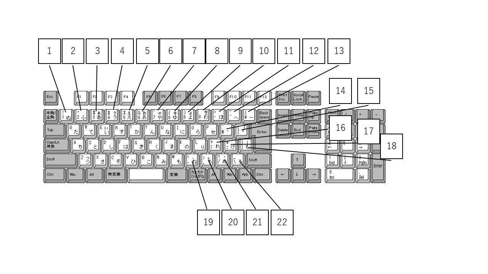
| 図の上の番号 | 普通に押す | Shiftと一緒に押す |
|---|---|---|
1 | 1 | ! エクスクラメーション マーク / びっくりマーク |
2 | 2 | " ダブル クォート |
3 | 3 | # 井桁 / シャープ |
4 | 4 | $ ドル |
5 | 5 | % パーセント |
6 | 6 | & アンド / アンパサンド |
7 | 7 | ' シングル クォート |
8 | 8 | ( かっこ開く |
9 | 9 | ) かっこ閉じる |
10 | 0 | (なし) |
11 | - ハイフン / マイナス | = イコール |
12 | ^ ハット | ~ チルダ |
13 | \ バックスラッシュ / ¥ 円マーク | | パイプ |
14 | @ アットマーク | ` バッククォート |
15 | [ 大かっこ開く / 角かっこ開く | { 中かっこ開く / 波かっこ開く |
16 | ; セミコロン | + プラス |
17 | : コロン | * アスタリスク |
18 | ] 大かっこ閉じる / 角かっこ閉じる | } 中かっこ閉じる / 波かっこ閉じる |
19 | , カンマ / コンマ | < 小なり |
20 | . ピリオド / ドット | > 大なり |
21 | / スラッシュ | ? クエッション マーク / はてなマーク |
22 | \ バックスラッシュ / ¥ 円マーク | _ アンダースコア / アンダーバー |
日本語のかっこの種類と呼び方
| かっこの種類 | 日本語の呼び方 | 英語の呼び方 |
|---|---|---|
() | 小かっこ / 丸かっこ / かっこ | parenthesis パーレンセシス paren パーレン round brackets |
[] | 大かっこ / 角かっこ | bracket ブラケット square bracket |
{} | 中かっこ / 波かっこ | brace ブレース curly brace / curly bracket |
<> | 山かっこ 小なり/大なり | angle bracket less-than sign/greater-than sign |